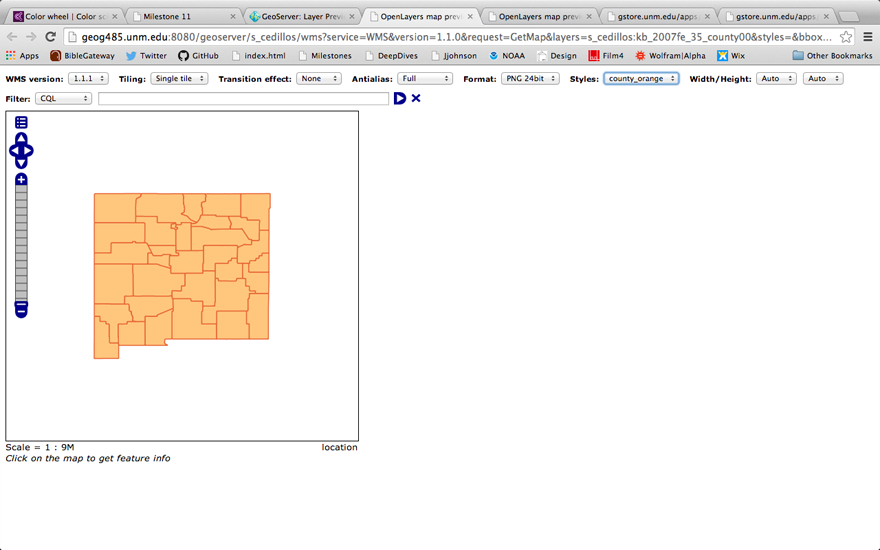
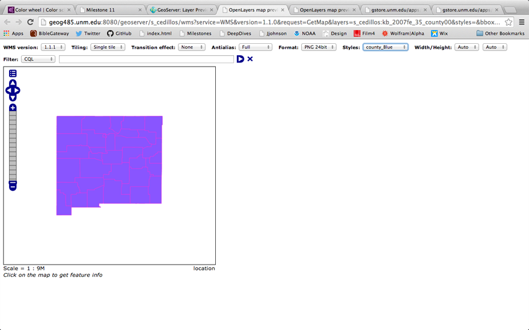
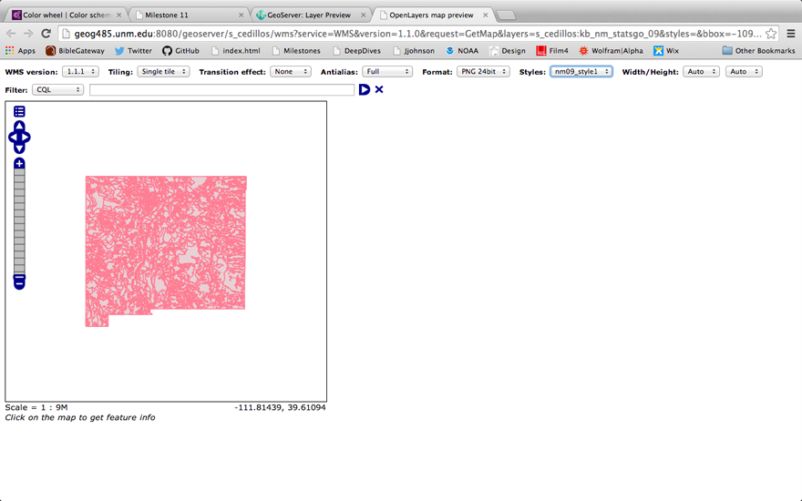
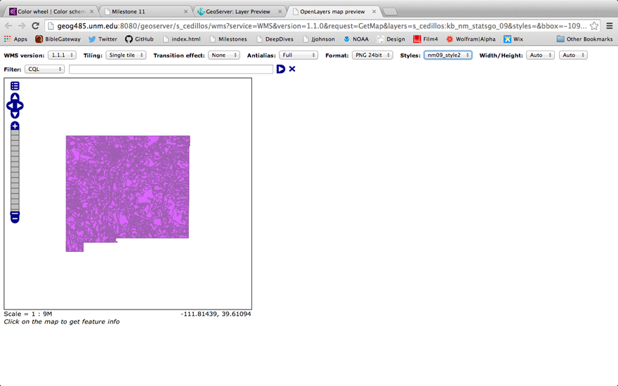
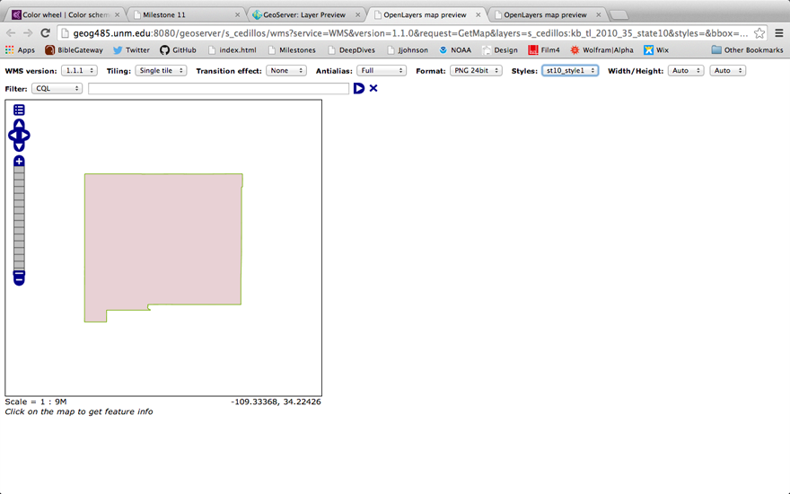
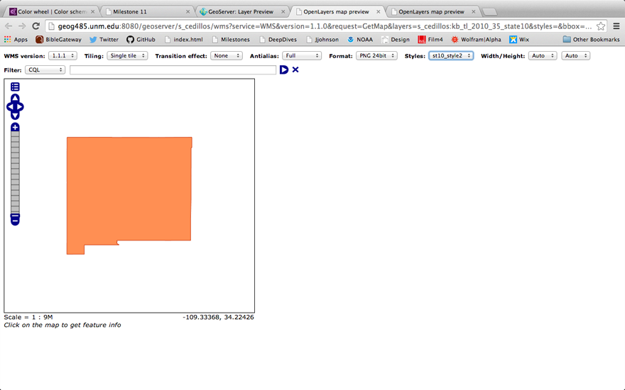

Elisa Cedillos
April 23 2014
Milestone 12
This week's milestone provides an opportunity to experiment with vector layer styling. Please define two custom styles for each of the vector datasets that you added to GeoServer during last week's lab assignment. Take a screenshot of the layer preview for each of your styles - including the options tools above the OpenLayers preview displaying the name of the custom style that is being used for the current map display.
Include in your writeup the layer name, the name of the two custom styles and the associated screenshots for each of the vector datasets.
kb_2007fe_35_county00
- county_orange
- 
county_blue

kb_nm_statsgo_09
- nm09_style1
- 
nm09_style2

kb_tl_2010_35_state10
- st10_style1

st_style2
